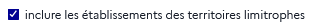

Carte des offres de formation - Onglet « Établissements »
Quelques fonctionnalités spécifiques permettent d’affiner l'analyse de la carte.
- Alterner de vue⚓
Il est possible d'alterner entre une vue carte (par défaut) et une vue liste. Depuis cette vue liste, on peut ouvrir le panorama d’un établissement au clic sur son nom.
- Exporter les données⚓
Il est possible d'
exporterles données de la carte. On exporte alors l’équivalent de la vue liste, c’est-à-dire la liste des établissements de la zone qui proposent la formation choisie ainsi que les données sur chacun de ces établissements. - Recentrer⚓
Il est possible, en cas de zoom ou de déplacement du focus, de recentrer sur la zone géographique des filtres.
- Inclusion des territoires limitrophes⚓
Il est possible d'inclure ou non les établissements des territoires limitrophes à ceux choisis dans les filtres. Par défaut, ces territoires sont inclus.
Exemple :
Si l'on choisit de visualiser un domaine pour le département de l’Hérault, on verra également des établissements des départements voisins du Gard ou de l’Aude.